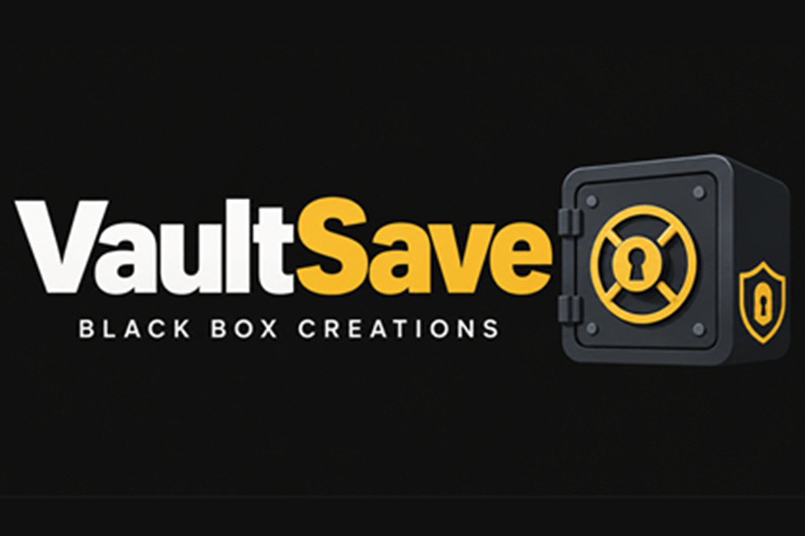

Tools / VaultSave
A lost save is a lost player. VaultSave keeps Unity player progress safe with AES-256 encryption, automatic backups, and migration that survives updates.
Instant download from the Unity Asset Store
One-time purchase · Unity Asset Store
Buy on the Unity Asset Store
Saves break in boring ways: a crash mid-write, a full disk, a player force-quitting at the wrong second, an update that changes what a save contains. Each one is rare; across thousands of players, each one is guaranteed. A save system exists for the guaranteed cases — the day a player's hundred-hour save meets a bad shutdown should not be the day they uninstall your game.
Unity developers shipping games where progress matters — RPGs, roguelikes, builders, anything with unlocks, levels, or inventory that players would hate to lose.
An unencrypted save is a text file anyone can open and edit: free currency, unlocked levels, skipped progression. That matters the moment your game has leaderboards, achievements, or anything competitive — and it matters for single-player games too, because edited saves produce bug reports for states the game never created. AES-256 encryption makes casual editing impractical. It does not make saves unbreakable against a determined attacker — nothing does — but it moves save editing from "open in Notepad" to "not worth the effort," which is where it needs to be.
Encryption protects saves from players; backups protect saves from reality. A crash during a write leaves a half-written file, and without a backup the only answer is a fresh start. VaultSave keeps automatic backup copies, so a damaged main save falls back to the most recent good one. The player loses minutes, not a campaign. Backups are cheap — save files are kilobytes — and the one time they matter, they matter completely.
Games change after launch: new fields appear, old ones disappear, formats evolve. Without migration, an update that changes the save format strands every existing player on a save the new version cannot read — which reads, to the player, as the update deleting their progress. Migration means each save carries a version, and loading an older version upgrades it step by step to the current format. Updates ship, saves survive, nobody notices — which is exactly how it should feel.
The rule is simple: save what the player would miss. Level and experience, inventory, unlocked content, settings, checkpoint progress, high scores — anything that represents time the player spent. Do not save what can be rebuilt: derived stats, cached data, anything the game can recompute on load. Smaller saves load faster, back up cheaper, and migrate more safely.
PlayerPrefs is fine for settings — volume, graphics quality, a high score. It is a key-value store, not a save system: no structure for complex game state, no encryption, no backups, no migration. The moment your save needs more than a few settings — an inventory, a quest state, a world — PlayerPrefs is the wrong tool, and the rewrite always happens at the worst possible time: after launch, with players already depending on it.
Versioning is a discipline, not a feature toggle. Every save gets a version number when written. Every load checks it. When the version is old, migration runs the upgrade path — one step per version, in order, so a save from three updates ago still arrives intact. The discipline that makes it work: never change the meaning of a field without bumping the version, and never ship an update without testing a load from the oldest save you support.
In practice the flow is short. On save: collect the state, hand it to VaultSave, and let it write the encrypted file and rotate the backup. On load: read the file, check the version, migrate if needed, and restore the state. On a damaged file: fall back to the backup automatically. The whole point of a save system is that this flow is boring — the interesting parts of your game are everywhere else.
Not every game needs one. An arcade game with a single high score, a demo with no progression, a jam game that lasts ten minutes — PlayerPrefs covers those, honestly. A save system earns its place the moment progress has value: hours of play, unlocks, a world the player built. If losing the save would make a player quit, you need the system. If it would make them shrug, you don't.
A quick way to evaluate a save system in an afternoon: save a test game state, corrupt the save file on purpose, and confirm the backup restores it. Then bump the save version, load the old save, and confirm migration works. Then check the encrypted file is not readable as plain text. Those three checks — backup, migration, encryption — are the whole value of the tool, and they take an hour to verify.
Players forgive a lot — bugs, balance, even a bad level. They do not forgive a lost save. VaultSave treats player progress as the most valuable file in your game: AES-256 encryption against tampering, automatic backups against corruption, and migration so updates never strand an old save. The best save system is the one players never think about, because it never fails them.
VaultSave is a save system for Unity games: it stores player progress — levels, inventory, settings, unlocks — in encrypted files with automatic backups, so progress survives crashes, corruption, and game updates.
Unencrypted saves are plain text anyone can edit — free currency, unlocked levels, skipped progress. AES-256 encryption makes casual save editing impractical, which protects leaderboards, achievements, and any progression players could otherwise fake.
That is what the automatic backups are for. If the main save is damaged — a crash mid-write, a full disk, a bad shutdown — VaultSave falls back to the most recent backup instead of handing the player a blank game.
Games change: new fields appear, old ones disappear, formats evolve. Migration means a save written by version 1.0 still loads in version 1.5 — the system upgrades the old data to the new format instead of discarding it and starting the player over.
Anything your game needs to remember between sessions: player level and experience, inventory, unlocked content, settings, checkpoint progress, high scores. If it is game state, it belongs in the save file.
Collect the state you need to remember, hand it to the save system, and let it write the encrypted file with a backup. Loading reverses the process: read the file, restore the state, and the player continues where they left off.
Different platforms store files in different places and fail in different ways — a phone killed mid-write, a PC with a full disk. A save system earns its keep by handling those realities for you: safe writes, backups, and a load path that degrades gracefully instead of crashing.
VaultSave stores saves locally on the device. Moving a save between devices is a file operation — copy the save file — not something a local save system syncs by itself. If you need cloud sync, that is a separate system on top.
Yes — encrypting a save file is a tiny amount of work compared to loading a level or a texture. Save files are small, encryption happens once per save, and modern devices handle AES-256 with hardware support. Players will never feel it.
PlayerPrefs is a simple key-value store for settings — volume, quality, a high score. It is not a save system: no structure for complex game state, no encryption, no backups, no migration. The moment your save needs more than a few settings, you need a real save system.
Yes — that is what migration is built on. Each save carries a version, and when the game loads an older version, the system upgrades it step by step to the current format. Versioning is what makes updates safe for existing players.
No — save files are small, usually kilobytes, so keeping a few backup copies costs almost nothing. The storage cost of a backup is trivial; the cost of losing a player's hundred-hour save is not.